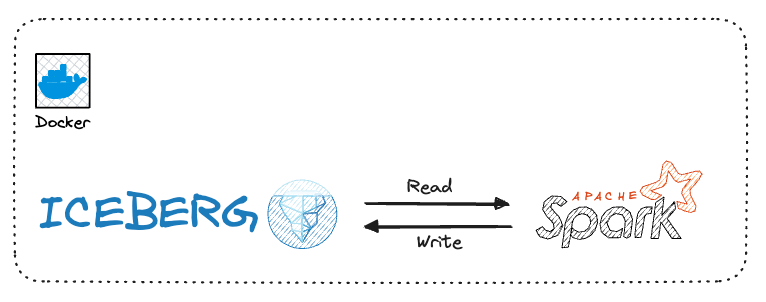
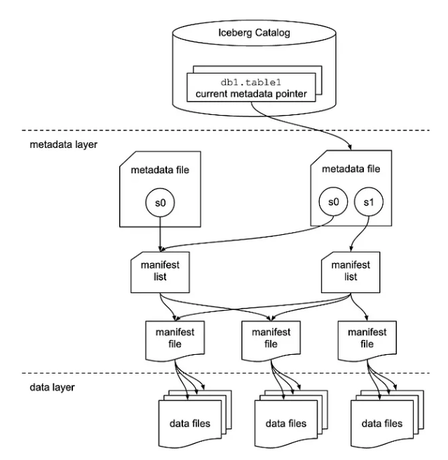

Apache Iceberg and PySpark#

If you've had experiences with data lakes, you likely faced significant challenges related to executing updates and deletes.
Managing the concurrency between multiple readers and writers, addressing schema evolution in your data, and managing the partitions evolution when data volume or query patterns change.
This is how Apache Iceberg comes into the picture.
About Apache Iceberg#
Apache Iceberg is an open table format designed for extensive analytics datasets. It is compatible with widely used big data processing engines such as Apache Spark, Trino, Flink, and Hive.
Iceberg tackles several limitations we listed above by acting as a metadata layer on top of the file format like Apache Parquet and Apache ORC.
Features#
- Schema Evolution
Allows for seamless schema evolution, overcoming the challenges associated with changes in data structure over time.
- Transactional Writes
By supporting transactional writes, Iceberg ensures the atomicity, consistency, isolation, and durability (ACID) properties, enhancing data integrity during write operations.
- Query Isolation
Iceberg provides query isolation, preventing interference between concurrent read and write operations, thus improving overall system reliability and performance.
- Time Travel
The time travel feature in Iceberg allows users to access historical versions of the data, offering a valuable mechanism for auditing, analysis, and debugging.
- Partition Pruning
Iceberg’s partition pruning capability optimizes query performance by selectively scanning only relevant partitions, reducing the amount of data processed and improving query speed.
Architecture#

Apache Iceberg table has three different layers.
Data Layer#
This is the layer where the actual data for the table is stored and is primarily made of data files. Apache Iceberg is file-format agnostic and it currently supports Apache Parquet, Apache ORC, and Apache Avro. It stores the data by default in Apache Parquet file format.
This file-format agnostic provides the ability for a user to choose the underlying file format based on the use case, for example, Parquet might be used for a large-scale OLAP analytics table, whereas Avro might be used for a low-latency streaming analytics table.
Tip
The data layer is backed by a distributed file system like HDFS or a cloud object storage like AWS S3.
Metadata Layer#
This layer contains all of the metadata files for an Iceberg table. It has a tree structure that tracks the data files and metadata about them along with the details of the operation that made them.
Info
The files in this layer are immutable files so everytime an insert, merge, upsert or delete operation happens on the table, a new set of files are written.
This layer contains 3 file types
Manifest Files#
Manifest lists keep track of manifest files, including the location, the partitions it belong to, and the upper and lower bound for partition columns for the data it tracks. It stores all this information in avro file format.
Note
A Manifest list file is a snapshot of an Iceberg Table as it contains the details of the snapshot along with snapshot_id that has added it.
Metadata Files#
Metadata files keep track of Manifest Lists. These files include the information about the metadata of the Iceberg Table at a certain point in time i.e. table’s schema, partition information, snapshots, and which snapshot is the current one.
All this information is stored in a json format file.
Example
{
"format-version" : 2,
"table-uuid" : "152c11c8-e993-487f-86d3-9603ff8c5b7f",
"location" : "./warehouse/db/persons",
"last-sequence-number" : 1,
"last-updated-ms" : 1718930007854,
"last-column-id" : 3,
"current-schema-id" : 0,
"schemas" : [ {
"type" : "struct",
"schema-id" : 0,
"fields" : [ {
"id" : 1,
"name" : "name",
"required" : false,
"type" : "string"
}, {
"id" : 2,
"name" : "age",
"required" : false,
"type" : "int"
}, {
"id" : 3,
"name" : "job_title",
"required" : false,
"type" : "string"
} ]
} ],
"default-spec-id" : 0,
"partition-specs" : [ {
"spec-id" : 0,
"fields" : [ ]
} ],
"last-partition-id" : 999,
"default-sort-order-id" : 0,
"sort-orders" : [ {
"order-id" : 0,
"fields" : [ ]
} ],
"properties" : {
"owner" : "root",
"write.parquet.compression-codec" : "zstd"
},
"current-snapshot-id" : 5317106206696669755,
"refs" : {
"main" : {
"snapshot-id" : 5317106206696669755,
"type" : "branch"
}
},
"snapshots" : [ {
"sequence-number" : 1,
"snapshot-id" : 5317106206696669755,
"timestamp-ms" : 1718930007854,
"summary" : {
"operation" : "append",
"spark.app.id" : "app-20240621003324-0000",
"added-data-files" : "2",
"added-records" : "3",
"added-files-size" : "1838",
"changed-partition-count" : "1",
"total-records" : "3",
"total-files-size" : "1838",
"total-data-files" : "2",
"total-delete-files" : "0",
"total-position-deletes" : "0",
"total-equality-deletes" : "0"
},
"manifest-list" : "warehouse/db/persons/metadata/snap-5317106206696669755-1-59b1ef61-4e45-4a54-bddf-c89989f2e7ef.avro",
"schema-id" : 0
} ],
"statistics" : [ ],
"snapshot-log" : [ {
"timestamp-ms" : 1718930007854,
"snapshot-id" : 5317106206696669755
} ],
"metadata-log" : [ ]
}
Catalog Layer#
Within the Catalog layer, there is a reference or pointer, that points to the current metadata file for that table.
Installing Apache Iceberg#
First, you need to clone this repo
- Add Iceberg installation in the Dockerfile
FROM pyspark
# Download iceberg spark runtime
RUN curl https://repo1.maven.org/maven2/org/apache/iceberg/iceberg-spark-runtime-3.4_2.12/1.4.3/iceberg-spark-runtime-3.4_2.12-1.4.3.jar -Lo /opt/spark/jars/iceberg-spark-runtime-3.4_2.12-1.4.3.jar
# Add iceberg spark runtime jar to IJava classpath
ENV IJAVA_CLASSPATH=/opt/spark/jars/*
- Add
warehousevolume mount for each of containers
volumes:
- ./scripts:/opt/spark/scripts
- ./data:/opt/spark/data
- spark-logs:/opt/spark/spark-events
- ./warehouse:/opt/spark/warehouse
Setup Iceberg Session#
Danger
Don't forget to clean up your docker resources by running make down after you finish this exercise.
To begin working with Iceberg tables in PySpark, it's essential to configure the PySpark session.
In the following steps, we will use a catalog named demo for tables located under the path ./warehouse of the Hadoop type.
Warning
Crucially, ensure compatibility between the Iceberg-Spark-Runtime JAR and the PySpark version in use.
You can find the necessary JARs in the Iceberg releases
warehouse_path = "./warehouse"
iceberg_spark_jar = 'org.apache.iceberg:iceberg-spark-runtime-3.4_2.12:1.4.3'
iceberg_spark_ext = 'org.apache.iceberg:iceberg-spark-extensions-3.4_2.12:1.4.3'
catalog_name = "demo"
# Setup iceberg config
conf = SparkConf().setAppName("YourAppName") \
.set("spark.sql.extensions", "org.apache.iceberg.spark.extensions.IcebergSparkSessionExtensions") \
.set(f"spark.sql.catalog.{catalog_name}", "org.apache.iceberg.spark.SparkCatalog") \
.set('spark.jars.packages', iceberg_spark_jar) \
.set('spark.jars.packages', iceberg_spark_ext) \
.set(f"spark.sql.catalog.{catalog_name}.warehouse", warehouse_path) \
.set(f"spark.sql.catalog.{catalog_name}.type", "hadoop")\
.set("spark.sql.defaultCatalog", catalog_name)
# Create spark session
spark = SparkSession.builder.config(conf=conf).getOrCreate()
spark.sparkContext.setLogLevel("ERROR")
Create and Write Iceberg Table with PySpark#
# Create a dataframe
schema = StructType([
StructField('name', StringType(), True),
StructField('age', IntegerType(), True),
StructField('job_title', StringType(), True)
])
data = [("person1", 28, "Doctor"), ("person2", 35, "Singer"), ("person3", 42, "Teacher")]
df = spark.createDataFrame(data, schema=schema)
# Create database
spark.sql(f"CREATE DATABASE IF NOT EXISTS db")
# Write and read Iceberg table
table_name = "db.persons"
df.write.format("iceberg").mode("overwrite").saveAsTable(f"{table_name}")
iceberg_df = spark.read.format("iceberg").load(f"{table_name}")
iceberg_df.printSchema()
iceberg_df.show()
Output
root
|-- name: string (nullable = true)
|-- age: integer (nullable = true)
|-- job_title: string (nullable = true)
+-------+---+---------+
| name|age|job_title|
+-------+---+---------+
|person1| 28| Doctor|
|person2| 35| Singer|
|person3| 42| Teacher|
+-------+---+---------+
We create a PySpark DataFrame, write it into an Iceberg table, and subsequently display the data stored in the Iceberg table.
Schema Evolution#
The flexibility of Data Lakes, allowing storage of diverse data formats, can pose challenges in managing schema changes.
Iceberg addresses this by enabling the addition, removal, or modification of table columns without requiring a complete data rewrite.
This feature simplifies the process of evolving schemas over time.
# Schema Evolution
spark.sql(f"ALTER TABLE {table_name} RENAME COLUMN job_title TO job")
spark.sql(f"ALTER TABLE {table_name} ALTER COLUMN age TYPE bigint")
spark.sql(f"ALTER TABLE {table_name} ADD COLUMN salary FLOAT AFTER job")
iceberg_df = spark.read.format("iceberg").load(f"{table_name}")
iceberg_df.printSchema()
iceberg_df.show()
spark.sql(f"SELECT * FROM {table_name}.snapshots").show()
schema BEFORE altering the table
root
|-- name: string (nullable = true)
|-- age: integer (nullable = true)
|-- job_title: string (nullable = true)
schema AFTER altering the table
root
|-- name: string (nullable = true)
|-- age: long (nullable = true)
|-- job: string (nullable = true)
|-- salary: float (nullable = true)
The above code shows schema evolution by renaming, changing column types, and adding a new column.
As you can observe in the schema changes:
- The column
agetype has changed - The column
job_titleis now renamed tojob - The column
salaryhas been added
The first time you run the code, in the snapshot table you notice that Iceberg executed all alterations without rewriting the data.
This is indicated by having only 1 snapshot ID and no parents (parent_id = NULL), telling us that no data rewriting was performed.
+--------------------+-------------------+---------+---------+--------------------+--------------------+
| committed_at| snapshot_id|parent_id|operation| manifest_list| summary|
+--------------------+-------------------+---------+---------+--------------------+--------------------+
|2024-06-21 00:33:...|5317106206696669755| NULL| append|warehouse/db/pers...|{spark.app.id -> ...|
+--------------------+-------------------+---------+---------+--------------------+--------------------+
ACID Transactions#
Data accuracy and consistency are crucial in data lakes, particularly for business-critical purposes.
Iceberg supports ACID transactions for write operations, ensuring that data remains in a consistent state, and enhancing the reliability of the stored information.
# ACID: add and delete records
spark.sql(f"DELETE FROM {table_name} WHERE age = 42")
spark.sql(f"INSERT INTO {table_name} values ('person4', 50, 'Teacher', 2000)")
spark.sql(f"SELECT * FROM {table_name}.snapshots").show()
snapshot table
+--------------------+-------------------+-------------------+---------+--------------------+--------------------+
| committed_at| snapshot_id| parent_id|operation| manifest_list| summary|
+--------------------+-------------------+-------------------+---------+--------------------+--------------------+
|2024-06-21 00:33:...|5317106206696669755| NULL| append|warehouse/db/pers...|{spark.app.id -> ...|
|2024-06-21 00:33:...| 333991769332533017|5354326724936052873|overwrite|warehouse/db/pers...|{spark.app.id -> ...|
|2024-06-21 00:33:...|1227170189499516533| 333991769332533017| append|warehouse/db/pers...|{spark.app.id -> ...|
+--------------------+-------------------+-------------------+---------+--------------------+--------------------+
In the snapshots table, we can now observe that Iceberg has added three snapshot IDs, each created from the preceding one.
Note
If, for any reason, one of the actions fails, the transactions will fail, and the snapshot won't be created.
Table Partitioning#
As you may be aware, querying large amounts of data in data lakes can be resource-intensive.
Iceberg supports data partitioning by one or more columns. This significantly improves query performance by reducing the volume of data read during queries.
# Alter Partitions
spark.sql(f"ALTER TABLE {table_name} ADD PARTITION FIELD age")
spark.read.format("iceberg").load(f"{table_name}").where("age = 28").show()
Partitioned DataFrame
+-------+---+------+------+
| name|age| job|salary|
+-------+---+------+------+
|person1| 28|Doctor| NULL|
+-------+---+------+------+
The code creates a new partition using the age column.
Note
This partition will apply to the new rows that get inserted moving forward, and old data will not be impacted
Info
We can also add partitions when we create the Iceberg table
Time Travel#
Analyzing historical trends or tracking changes over time is often essential in a data lake.
Iceberg provides a time-travel API that allows users to query data as it appeared at a specific version or timestamp, facilitating historical data analysis.
Apache Iceberg gives you the flexibility to load any snapshot or data at a given point in time.
This allows you to examine changes at a given time or roll back to a specific version.
Warning
You need to change the snapshot-id as per your code runtime.
spark.sql(f"SELECT * FROM {table_name}.snapshots").show(1, truncate=False)
# Read snapshot by id run
snapshot_id = "333991769332533017"
spark.read.option("snapshot-id", snapshot_id).table(table_name).show()
+-----------------------+-------------------+---------+---------+--------------------------------------------------------------------------------------------------+----------------------------------------------------------------------------------------------------------------------------------------------------------------------------------------------------------------------------------------------------------------------------------------------------+
|committed_at |snapshot_id |parent_id|operation|manifest_list |summary |
+-----------------------+-------------------+---------+---------+--------------------------------------------------------------------------------------------------+----------------------------------------------------------------------------------------------------------------------------------------------------------------------------------------------------------------------------------------------------------------------------------------------------+
|2024-06-21 00:33:27.854|5317106206696669755|NULL |append |warehouse/db/persons/metadata/snap-5317106206696669755-1-59b1ef61-4e45-4a54-bddf-c89989f2e7ef.avro|{spark.app.id -> app-20240621003324-0000, added-data-files -> 2, added-records -> 3, added-files-size -> 1838, changed-partition-count -> 1, total-records -> 3, total-files-size -> 1838, total-data-files -> 2, total-delete-files -> 0, total-position-deletes -> 0, total-equality-deletes -> 0}|
+-----------------------+-------------------+---------+---------+--------------------------------------------------------------------------------------------------+----------------------------------------------------------------------------------------------------------------------------------------------------------------------------------------------------------------------------------------------------------------------------------------------------+
only showing top 1 row
Load Parquet Files into Iceberg#
from pyspark.sql import SparkSession
from pyspark import SparkConf
from pyspark.sql.types import StructType, StructField, StringType, IntegerType
warehouse_path = "./warehouse"
iceberg_spark_jar = 'org.apache.iceberg:iceberg-spark-runtime-3.4_2.12:1.4.3'
iceberg_spark_ext = 'org.apache.iceberg:iceberg-spark-extensions-3.4_2.12:1.4.3'
catalog_name = "demo"
# Setup iceberg config
conf = SparkConf().setAppName("YourAppName") \
.set("spark.sql.extensions", "org.apache.iceberg.spark.extensions.IcebergSparkSessionExtensions") \
.set(f"spark.sql.catalog.{catalog_name}", "org.apache.iceberg.spark.SparkCatalog") \
.set('spark.jars.packages', iceberg_spark_jar) \
.set('spark.jars.packages', iceberg_spark_ext) \
.set(f"spark.sql.catalog.{catalog_name}.warehouse", warehouse_path) \
.set(f"spark.sql.catalog.{catalog_name}.type", "hadoop")\
.set("spark.sql.defaultCatalog", catalog_name)
# Create spark session
spark = SparkSession.builder.config(conf=conf).getOrCreate()
spark.sparkContext.setLogLevel("ERROR")
SOURCE_PATH = "./data/yellow_trip_data"
DEST_PATH = "./data/output/count_by_vendor.parquet"
# Loading the data
df = spark.read.options(inferSchema=True).parquet(SOURCE_PATH)
df.printSchema()
spark.sql(f"CREATE DATABASE IF NOT EXISTS db")
df.writeTo("db.yellow_trip_data") \
.createOrReplace()
spark.sql("DESCRIBE TABLE db.yellow_trip_data").show(truncate=False)
spark.sql("SHOW CREATE TABLE db.yellow_trip_data").show(truncate=False)
spark.sql("SELECT * FROM db.yellow_trip_data LIMIT 5").show()
Run above code using
By this exercise, we will learn
- load the parquet files into spark runtime
- write the data into Iceberg table
Schema
root
|-- VendorID: long (nullable = true)
|-- tpep_pickup_datetime: timestamp_ntz (nullable = true)
|-- tpep_dropoff_datetime: timestamp_ntz (nullable = true)
|-- passenger_count: double (nullable = true)
|-- trip_distance: double (nullable = true)
|-- RatecodeID: double (nullable = true)
|-- store_and_fwd_flag: string (nullable = true)
|-- PULocationID: long (nullable = true)
|-- DOLocationID: long (nullable = true)
|-- payment_type: long (nullable = true)
|-- fare_amount: double (nullable = true)
|-- extra: double (nullable = true)
|-- mta_tax: double (nullable = true)
|-- tip_amount: double (nullable = true)
|-- tolls_amount: double (nullable = true)
|-- improvement_surcharge: double (nullable = true)
|-- total_amount: double (nullable = true)
|-- congestion_surcharge: double (nullable = true)
|-- airport_fee: double (nullable = true)
CREATE TABLE statement
CREATE TABLE demo.db.yellow_trip_data (
VendorID BIGINT,
tpep_pickup_datetime TIMESTAMP_NTZ,
tpep_dropoff_datetime TIMESTAMP_NTZ,
passenger_count DOUBLE,
trip_distance DOUBLE,
RatecodeID DOUBLE,
store_and_fwd_flag STRING,
PULocationID BIGINT,
DOLocationID BIGINT,
payment_type BIGINT,
fare_amount DOUBLE,
extra DOUBLE,
mta_tax DOUBLE,
tip_amount DOUBLE,
tolls_amount DOUBLE,
improvement_surcharge DOUBLE,
total_amount DOUBLE,
congestion_surcharge DOUBLE,
airport_fee DOUBLE)
USING iceberg
LOCATION './warehouse/db/yellow_trip_data'
TBLPROPERTIES (
'current-snapshot-id' = '3768997006627294211',
'format' = 'iceberg/parquet',
'format-version' = '2',
'write.parquet.compression-codec' = 'zstd')
Data overview
+--------+--------------------+---------------------+---------------+-------------+----------+------------------+------------+------------+------------+-----------+-----+-------+----------+------------+---------------------+------------+--------------------+-----------+
|VendorID|tpep_pickup_datetime|tpep_dropoff_datetime|passenger_count|trip_distance|RatecodeID|store_and_fwd_flag|PULocationID|DOLocationID|payment_type|fare_amount|extra|mta_tax|tip_amount|tolls_amount|improvement_surcharge|total_amount|congestion_surcharge|airport_fee|
+--------+--------------------+---------------------+---------------+-------------+----------+------------------+------------+------------+------------+-----------+-----+-------+----------+------------+---------------------+------------+--------------------+-----------+
| 1| 2022-01-01 00:35:40| 2022-01-01 00:53:29| 2.0| 3.8| 1.0| N| 142| 236| 1| 14.5| 3.0| 0.5| 3.65| 0.0| 0.3| 21.95| 2.5| 0.0|
| 1| 2022-01-01 00:33:43| 2022-01-01 00:42:07| 1.0| 2.1| 1.0| N| 236| 42| 1| 8.0| 0.5| 0.5| 4.0| 0.0| 0.3| 13.3| 0.0| 0.0|
| 2| 2022-01-01 00:53:21| 2022-01-01 01:02:19| 1.0| 0.97| 1.0| N| 166| 166| 1| 7.5| 0.5| 0.5| 1.76| 0.0| 0.3| 10.56| 0.0| 0.0|
| 2| 2022-01-01 00:25:21| 2022-01-01 00:35:23| 1.0| 1.09| 1.0| N| 114| 68| 2| 8.0| 0.5| 0.5| 0.0| 0.0| 0.3| 11.8| 2.5| 0.0|
| 2| 2022-01-01 00:36:48| 2022-01-01 01:14:20| 1.0| 4.3| 1.0| N| 68| 163| 1| 23.5| 0.5| 0.5| 3.0| 0.0| 0.3| 30.3| 2.5| 0.0|
+--------+--------------------+---------------------+---------------+-------------+----------+------------------+------------+------------+------------+-----------+-----+-------+----------+------------+---------------------+------------+--------------------+-----------+
Conclusion#
Apache Iceberg provides a robust solution for managing big data tables with features like atomic commits, schema evolution, and time travel.
When combined with the power of PySpark, you can harness the capabilities of Iceberg while leveraging the flexibility and scalability of PySpark for your big data processing needs.